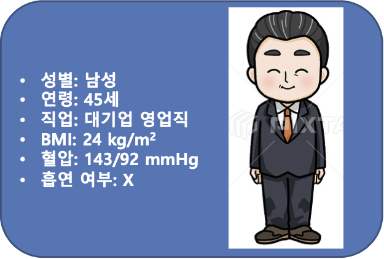

텔미트렌의 다양한 처방 케이스에 대해 좀더 나은 제품과 서비스를 만들기 위해 선생님들의 많은 참여 부탁드립니다*
참여하기test 참여 전 알고 계신 코드를 입력해 주세요*
-$만약 알고 계신 코드가 없다면 이동 버튼을 클릭해주세요
테스트 진행을 위해 아래 정보를 입력해 주세요
다음4월
5월
6월
7월
생전 처음으로 고혈압을 진단받은 다음과 같은 환자의 혈압 관리를 위해 선생 님께서는 가장 먼저 어떤 방식을 선택하시겠습니까?
즉시 혈압강하제 처방을 고려하시게 된 이유는 무엇입니까? (복수 선택 가능)
생활습관개선을 우선 권고하시게 된 이유는 무엇입니까? (복수 선택 가능)
선생님께서는 텔미트렌 20mg을 처방해보신 경험이 있으신지요?
1. 텔미트렌 20mg은 어떤 환자에게 처방하셨습니까? (복수 선택 가능)
1-1. 텔미트렌 20mg은 어떤 ARB 제제를 대신하여 처방하셨습니까? (복수 선택 가능)
2. 텔미트렌 20mg의 혈압 강하 효과에 대해 어떻게 생각하십니까?
2-1. 텔미트렌 20mg의 혈압 강하 효과가 부족했을 때 어떻게 대응하셨습니까? (복수 선택 가능)
3. 기존 텔미사르탄 제제와 비교하여 텔미트렌 20mg의 장점은 무엇이라고 생각하십니까?
1. 텔미트렌 20mg을 처방해 본 경험이 없으신 이유는 무엇입니까? (복수 선택 가능)
2. 향후 텔미트렌 20mg을 처방해보실 의향이 있으신지요?